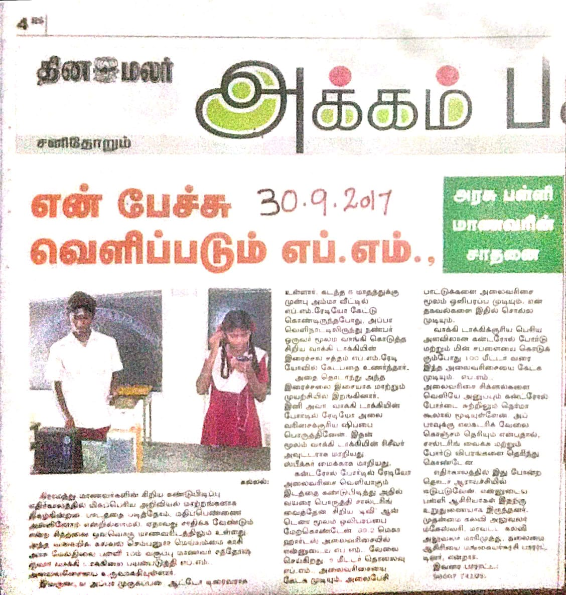
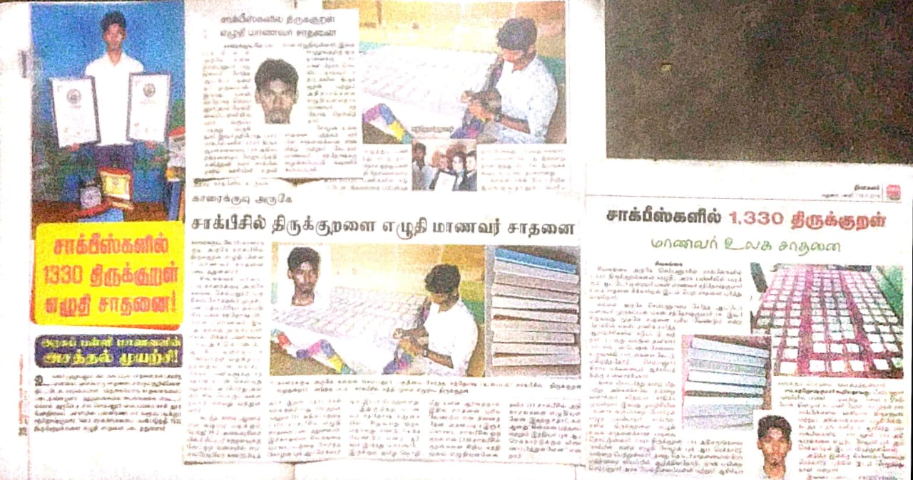

FM STATION in 10th std
WORLD RECORD Attempt in 11th std
WORLD RECORD Attempt in clg 2nd year

பெயர் m.சந்தோஷ் குமார்.
வயது 19 (08/05.2002).
ஊர் செம்பனூர் சிவகங்கை மாவட்டம்.
பெற்றோர் R. முருகப்பன் (ஆட்டோ ஓட்டுனர்).
m.பத்மபிரியா (கண்மாய் வெட்டு ).
சின்ன வயதில் இருந்து படித்தது அரசு பள்ளி.
பத்தாவது படிக்கும்போது சிறிய எப்எம் Station 5 மீட்டர் அளவில்
ஒளிபரப்பாகும் fm station உருவாக்கி இரவு நேரங்களில்
விவசாயிகளுக்கு தேவையான பயனுள்ள தகவல்களை ஒளிபரப்பாகியது
அதன் பின்னர் பன்னிரண்டாம் வகுப்பு படிக்கும் பொழுது
1330 திருக்குறளையும் 1330 சாக்பீஸ் ல் செதுக்கி உலக சாதனை படைத்தேன்...
அதற்காக சோழன் புக் ஆஃ வேர்ல்டு ரெக்கார்ட்ஸ் இல் இருந்து
எனக்கு உலக சாதனை சான்றிதழ் மற்றும் கேடயம் வழங்கப்பட்டது
தற்பொழுது புனித மைக்கல் கல்லூரியில் பொறியியல் இரண்டாம் ஆண்டு படித்து வருகிறேன்
தற்போது டாமினோஸ் கலையின் மூலம் 21,000 தீ பெட்டிகளை அடுக்கி வைத்து
அதைச் அதைச் சரிப்பதன் மூலம் முன்னாள் ஜனாதிபதி டாக்டர் ஏபிஜே அப்துல் கலாம்
அவர்களின் உருவப்படம் வடிவமைத்து இருந்தோம் இதில் நானும் என் குழு உறுப்பினர்கள்
நாற்பத்தி ஒன்பது பேரும் சேர்ந்து இந்த உலக சாதனையை நிகழ்த்தினோம்
இதற்காக எங்களுக்கு சோழன் புக் ஆப் வேர்ல்ட் இல் இருந்து அனைவருக்கும்
உலக சாதனைக்கான சான்றிதழ் வழங்கப்பட்டது...
copyright © 2021 sandy papa ™